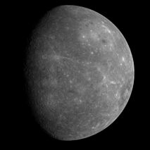

Odległość od Słońca w mln km: 59,9
Okres obiegu wokół Słońca: 87,969 dnia
Okres rotacji: 58,65 dni
Średnica (km): 4878
Masa (Ziemia = 1): 0,056
Objętość (Ziemia = 1): 0,05
Prędkość ruchu po orbicie (km/s): 47,4
Gęstość (g/cm³): 5,43
Liczba znanych księżyców: 0
Merkury jest pierwszą i najmniejszą planetą naszego Układu. Ciężko zobaczyć go z Ziemi, ponieważ zawsze pojawia się blisko Słońca. Merkury jest pozbawiony atmosfery. Płaszcz pod skorupą składa się ze stopionych skał, a w środku planety znajduje się jądro żelazne. Merkury krąży wokół Słońca szybko, jednak wokół swojej osi wolno, co sprawia, że wschód Słońca następuje na nim co 176 dni. Jest on jednym z najgorętszych i jednocześnie najzimniejszych planet Układu Słonecznego. Maksymalna temperatura na Merkurym wynosi +427°C, a minimalna -212°C.
Merkury ma wiele kraterów, występują na nim góry a także kilka płaskich obszarów. Największy krater o nazwie Caloris Planitia ma średnicę 1300 km. Sonda kosmiczna "Mariner 10" zbliżyła się do tej planety po przebyciu prawie 170 milionów kilometrów, a jej podróż trwała 146 dni. "Mariner 10" przeleciał obok Merkurego trzy razy fotografując go. Odkryto wtedy, że jego powierzchnię przecinają wielkie, strome skarpy o wysokości ponad 3 km, które przecinają ściany kraterów i ciągną się na przestrzeni setek kilometrów. Około 14 razy w każdym stuleciu Merkury przesuwa się dokładnie między Słońcem a Ziemią. Astronomowie nazywają to przejściem Merkurego przez tarczę słoneczną. Planeta ta jest wtedy widoczna jako mała plamka przesuwająca się ze wschodu na zachód przez tarczę Słońca.
Merkury ma wiele kraterów, występują na nim góry a także kilka płaskich obszarów. Największy krater o nazwie Caloris Planitia ma średnicę 1300 km. Sonda kosmiczna "Mariner 10" zbliżyła się do tej planety po przebyciu prawie 170 milionów kilometrów, a jej podróż trwała 146 dni. "Mariner 10" przeleciał obok Merkurego trzy razy fotografując go. Odkryto wtedy, że jego powierzchnię przecinają wielkie, strome skarpy o wysokości ponad 3 km, które przecinają ściany kraterów i ciągną się na przestrzeni setek kilometrów. Około 14 razy w każdym stuleciu Merkury przesuwa się dokładnie między Słońcem a Ziemią. Astronomowie nazywają to przejściem Merkurego przez tarczę słoneczną. Planeta ta jest wtedy widoczna jako mała plamka przesuwająca się ze wschodu na zachód przez tarczę Słońca.